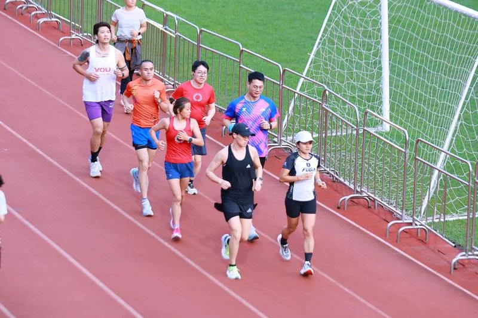
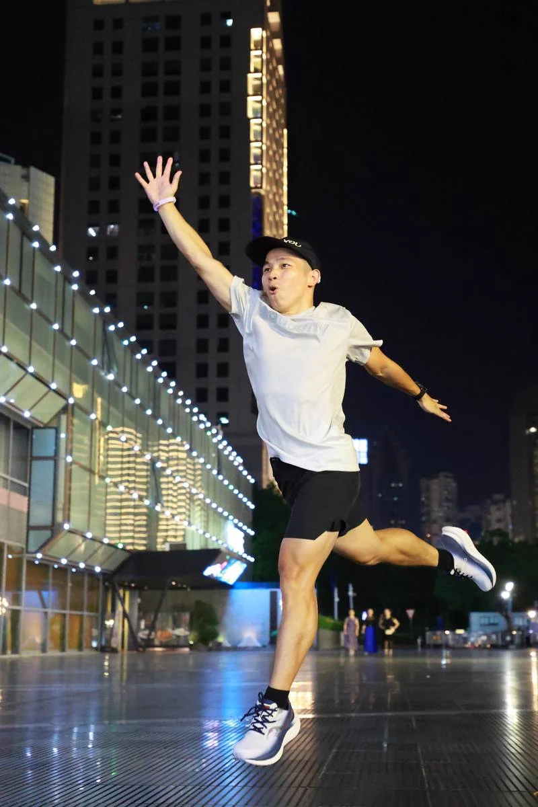
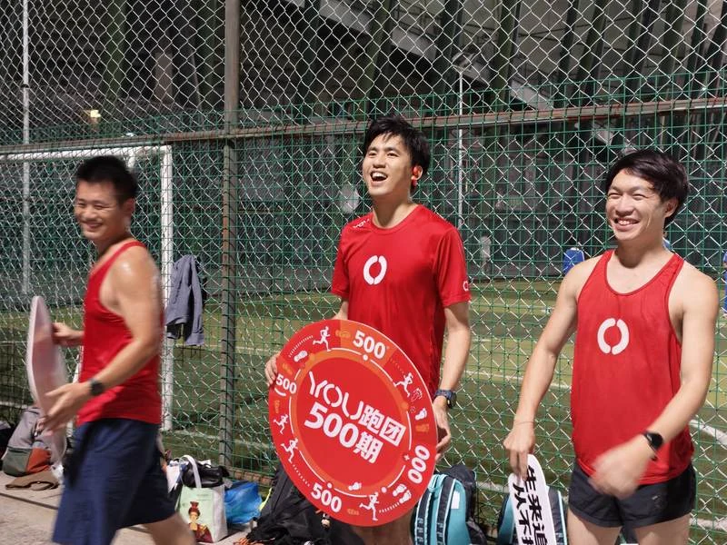
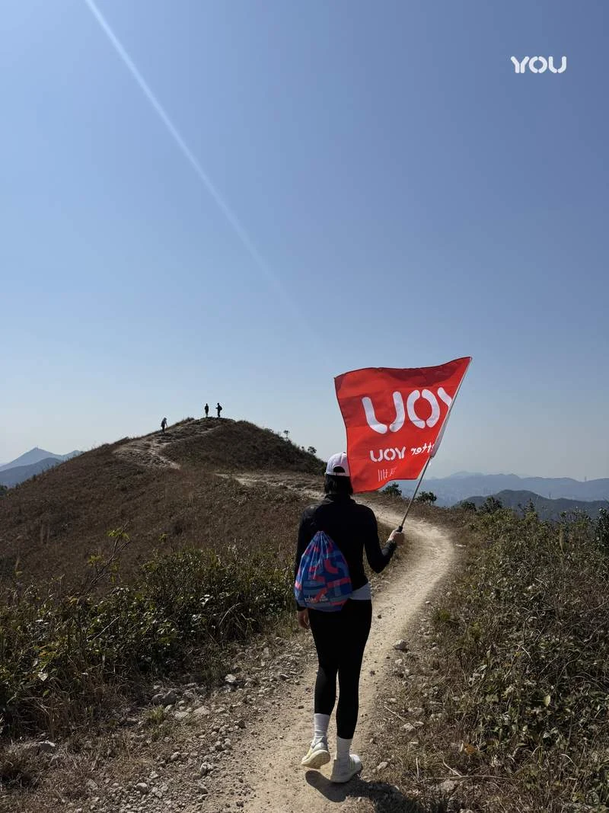
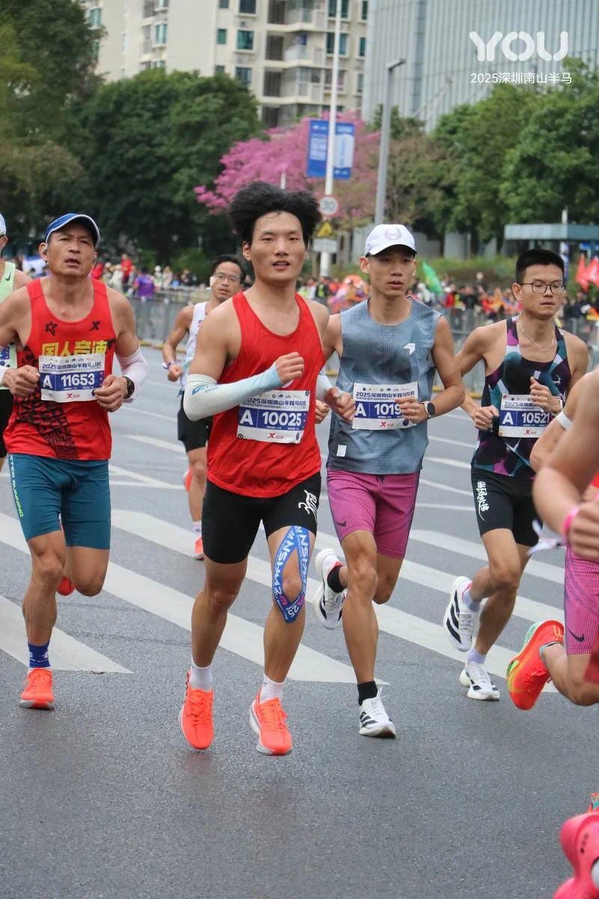

品牌合作案例
品牌和跑友在同一个现场：从跑鞋体验到赛前早餐跑。
Sportsday
Sportsday 品牌活动。跑友在草地上并排而坐，留下当天的合影。
小红书「跑进夏夜」
跑友举着各式手牌，在夏夜活动现场拍下一张集体照。
YOU × 迈胜｜紫霞跑
夜间跑道上有训练镜头，也有跑友在紫霞跑活动牌旁和补给合影。

2025年 · 索康尼索康尼｜为胜利比个耶
索康尼主题夜跑。城市灯光下，YOU 跑友跑过街头，也在镜头前跃起。
YOU × HOKA｜深圳 BONDI 9
跑友在深圳的街景中跃起，把 BONDI 9 跑鞋体验带进城市户外。
韶音圣诞跑
红色圣诞帽、夜间跑步和手牌合影，是这组照片里的三个场景。
韶音「开跑吧」
跑友穿着红色团服在宝体集合，现场体验韶音运动耳机。
跑团内部活动
按活动主题分类，每类按相册记录时间由近及远展示。
年会与周年庆
最新在前YOU 跑团 2026 年会
户外遮阳棚下摆好了点心。一张张照片记录了跑友到场、合影和相聚的时刻。
 2025年 · 十周年
2025年 · 十周年YOU 跑团 10 周年庆
跑友带着红色队旗和周年手牌，在草地上留下十周年合影。
 2025年 · 年会
2025年 · 年会深圳 YOU 跑团 2025 年会
红色年会背景板前，跑友三两成群拍照，留下跑道之外的合影。
YOU 跑团 9 周年庆
跑友在户外相聚，挥动周年主题手牌，在绿荫间合影。
训练与团队挑战
最新在前 2026年 · 24小时接力
2026年 · 24小时接力YOU 跑团 24 小时接力赛
穿着红色团服、戴着号码布的跑友在接力现场并肩留影。

2026年 · 例跑YOU 跑团第 500 期例跑
红色「500期」纪念牌与跑友的笑脸，记下每周例跑的里程碑。
YOU 跑团 24 小时接力赛
跑道之外，还有跑友在绿地边等待、喝水或拍照。
户外与团建
最新在前麦理浩径二段
沿山径看海，镜头从山坡转向海浪和远处的小岛。
松山湖端午活动
端午相约松山湖，跑友在绿意里拍下一张近距离合影。

2025年 · 户外麦理浩径四段与飞鹅山
沿山脊向前，一面红色队旗把跑友的身影和远山连在一起。
马拉松赛记
镜头对准参赛跑友和赛道边举旗加油的人。


档案按年份标记；年会沿用相册标明的届次。